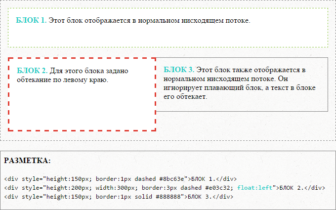
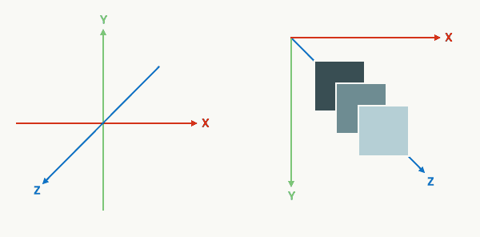

CSS-позиционирование
Содержание:
Содержащий блок
Положение и размер блока(ов) элемента иногда вычисляются относительно некоторого прямоугольника, называемого содержащим блоком элемента (containing block). В общих словах, содержащий блок — это блок, который содержит другой элемент. В случае нормального потока корневой элемент html является содержащим блоком для элемента body, который, в свою очередь, является содержащим блоком для всех его дочерних элементов и так далее. В случае позиционирования содержащий блок полностью зависит от типа позиционирования. Содержащий блок элемента определяется следующим образом:
- Содержащий блок, в котором находится корневой элемент, представляет собой прямоугольник — так называемый начальный содержащий блок.
- Для некорневого элемента с position: static; или position: relative; содержащий блок формируется краем области содержимого ближайшего родительского блока уровня блока, ячейки таблицы или уровня строки.
- Содержащим блоком элемента с position: fixed; является окно просмотра.
- ля некорневого элемента с position: absolute; содержащим блоком устанавливается ближайший родительский элемент со значением position: absolute/relative/fixed следующим образом:
- - если предок — элемент уровня блока, содержащим блоком будет область содержимого плюс поля элемента padding;
- - если предок — элемент уровня строки, содержащим блоком будет область содержимого;
- - если предков нет, то содержащий блок элемента определяется как начальный содержащий блок.
- Для «липкого» блока содержащим блоком является ближайший предок с прокруткой или окно просмотра, в противном случае.
Смещение блока: свойства top, right, bottom, left
Элемент считается позиционированным, если свойство position имеет значение, отличное от static. Позиционированные элементы генерируют позиционированные блоки и могут быть расположены в соответствии со следующими четырьмя физическими свойствами:
| top | |
|---|---|
| Значения: | |
| auto | Влияние значения зависит типа элемента. Значение по умолчанию. |
| длина | Смещение на фиксированном расстоянии от указанного края. Отрицательные значения допускаются. |
| % | Процентные значения вычисляются относительно высоты содержащего блока. Для «липкого» блока — относительно высоты корневого элемента. Отрицательные значения допускаются. |
| initial | Устанавливает значение свойства в значение по умолчанию. |
| inherit | Наследует значение свойства от родительского элемента. |
Синтаксис
top: 10px;
top: 2em;
top: 50%;
top: auto;
top: inherit;
top: initial;
Свойство top задает расстояние, на которое верхний край абсолютно позиционированного блока (с учетом его margin) смещается ниже верхнего края содержащего блока. Для относительно позиционированных блоков определяет смещение относительно верхнего края самого блока (то есть блоку задается позиция в нормальном потоке, а затем смещение от этой позиции в соответствии с этим свойством).
| right | |
|---|---|
| Значения: | |
| auto | Влияние значения зависит типа элемента. Значение по умолчанию. |
| длина | Смещение на фиксированном расстоянии от указанного края. Отрицательные значения допускаются. |
| % | Процентные значения вычисляются относительно ширины содержащего блока. Для «липкого» блока — относительно ширины корневого элемента. Отрицательные значения допускаются. |
| initial | Устанавливает значение свойства в значение по умолчанию. |
| inherit | Наследует значение свойства от родительского элемента. |
Синтаксис
right: -10px;
right: .5em;
right: -10%;
right: auto;
right: inherit;
right: initial;
Свойство right указывает расстояние, на которое правый край абсолютно позиционированного блока (с учетом его margin) смещен влево от правого края содержащего блока. Для относительно позиционированных блоков определяет смещение относительно правого края самого блока.
| bottom | |
|---|---|
| Значения: | |
| auto | Влияние значения зависит типа элемента. Значение по умолчанию. |
| длина | Смещение на фиксированном расстоянии от указанного края. Отрицательные значения допускаются. |
| % | Процентные значения вычисляются относительно высоты содержащего блока. Для «липкого» блока — относительно высоты корневого элемента. Отрицательные значения допускаются. |
| initial | Устанавливает значение свойства в значение по умолчанию. |
| inherit | Наследует значение свойства от родительского элемента. |
Синтаксис
bottom: 40px;
bottom: .7em;
bottom: -70%;
bottom: auto;
bottom: inherit;
bottom: initial;
Свойство bottom указывает расстояние, на которое нижний край блока смещен вверх относительно нижнего края содержащего блока. Для относительно позиционированных блоков определяет смещение относительно нижнего края самого блока.
| left | |
|---|---|
| Значения: | |
| auto | Влияние значения зависит типа элемента. Значение по умолчанию. |
| длина | Смещение на фиксированном расстоянии от указанного края. Отрицательные значения допускаются. |
| % | Процентные значения вычисляются относительно ширины содержащего блока. Для «липкого» блока — относительно ширины корневого элемента. Отрицательные значения допускаются. |
| initial | Устанавливает значение свойства в значение по умолчанию. |
| inherit | Наследует значение свойства от родительского элемента. |
Синтаксис
left: 90px;
left: 8em;
left: 30%;
left: auto;
left: inherit;
left: initial;
Свойство left указывает расстояние, на которое левый край смещен вправо от левого края содержащего блока. Для относительно позиционированных блоков определяет смещение относительно левого края самого блока.
Положительные значения смещают элемент внутрь содержащего блока, а отрицательные — за его пределы.
Выбор схемы позиционирования: свойство position
Свойство position определяет, какой из алгоритмов позиционирования используется для вычисления положения блока.
Свойство не наследуется.
| position | |
|---|---|
| Значения: | |
| static | Блок располагается в соответствии с нормальным потоком. Свойства top, right, bottom и left не применяются. Значение по умолчанию. |
| relative | Положение блока рассчитывается в соответствии с нормальным потоком. Затем блок смещается относительно его нормального положения и во всех случаях, включая элементы таблицы, не влияет на положение любых следующих блоков. Тем не менее, такое смещение может привести к перекрытию блоков, а также к появлению полосы прокрутки в случае переполнения. Относительно позиционированный блок сохраняет свои размеры, включая разрывы строк и пространство, первоначально зарезервированное для него. Относительно позиционированный блок создает новый содержащий блок для абсолютно позиционированных потомков. Влияние position: relative; на элементы таблицы определяется следующим образом: Элементы с table-row-group, table-header-group, table-footer-group иd table-row смещаются относительно их обычной позиции в таблице. Если ячейки таблицы занимают несколько строк, смещаются только ячейки начальной строки. table-column-group, table-column не смещает соответствующий столбец и не оказывает визуального влияния. table-caption and table-cell смещаются относительно своего нормального положения в таблице. Если ячейка таблицы охватывает несколько столбцов или строк, то она смещается целиком. |
| absolute | Положение блока (и, возможно, размер) задается с помощью свойств top, right, bottom и left. Эти свойства определяют явное смещение относительно его содержащего блока. Абсолютно позиционированные блоки полностью удаляется из нормального потока, не влияя на расположение сестринских элементов. Отступы margin абсолютно позиционированных блоков не схлопываются. Абсолютно позиционированный блок создает новый содержащий блок для дочерних элементов нормального потока и потомков с position: absolute;. Содержимое абсолютно позиционированного элемента не может обтекать другие блоки. Абсолютно позиционированный блок могут скрывать содержимое другого блока (или сами могут быть скрыты), в зависимости от значения z-index перекрывающихся блоков. |
| sticky | Положение блока рассчитывается в соответствии с нормальным потоком. Затем блок смещается относительно своего ближайшего предка с прокруткой или окна просмотра, если ни у одного из предков нет прокрутки. «Липкий» блок может перекрывать другие блоки, а также создавать полосы прокрутки в случае переполнения. «Липкий» блок сохраняет свои размеры, включая разрывы строк и пространство, первоначально зарезервированное для него. «Липкий» блок создает новый содержащий блок для абсолютно и относительно позиционированных потомков. |
| fixed | Фиксированное позиционирование аналогично абсолютному позиционированию, с отличием в том, что для содержащим блоком устанавливается окно просмотра. Такой блок полностью удаляется из потока документа и не имеет позиции относительно какой-либо части документа. Фиксированные блоки не перемещаются при прокрутке документа. В этом отношении они похожи на фиксированные фоновые изображения. При печати фиксированные блоки повторяются на каждой странице, содержащим блоком для них устанавливается область страницы. Блоки с фиксированным положением, которые больше области страницы, обрезаются. |
| initial | Устанавливает значение свойства в значение по умолчанию. |
| inherit | Наследует значение свойства от родительского элемента. |
Синтаксис
position: static;
position: relative;
position: absolute;
position: sticky;
position: fixed;
position: initial;
position: inherit;
Обтекание: свойство float
Обтекание позволяет блокам смещаться влево или вправо на текущей строке. «Плавающий блок» смещается влево или вправо до тех пор, пока его внешний край не коснется края содержащего блока или внешнего края другого плавающего блока. Если имеется линейный блок, внешняя верхняя часть плавающего блока выравнивается с верхней частью текущего линейного блока.
При использовании свойства float для элементов рекомендуется задавать ширину. Тем самым браузер создаст место для другого содержимого. Если для плавающего элемента недостаточно места по горизонтали, он будет смещаться вниз до тех пор, пока не уместится. При этом остальные элементы уровня блока будут его игнорировать, а элементы уровня строки будут смещаться вправо или влево, освобождая для него пространство и обтекая его.
Правила, регулирующие поведение плавающих боков, описываются свойством float.
Свойство не наследуется.
| float | |
|---|---|
| Значения: | |
| none | Отсутствие обтекания. Значение по умолчанию. |
| left | Элемент перемещается влево, содержимое обтекает плавающий блок по правому краю. |
| right | Элемент перемещается вправо, содержимое обтекает плавающий блок по левому краю. |
| inherit | Наследует значение свойства от родительского элемента. |
Синтаксис
float: left;
float: right;
float: none;
float: inherit;
Плавающий блок принимает размеры своего содержимого с учетом внутренних отступов и рамок. Верхние и нижние отступы margin плавающих элементов не схлопываются.
Плавающие элементы могут использовать отрицательные отступы margin, чтобы перемещаться за пределы области содержимого их родительского элемента.
Свойство автоматически изменяет вычисляемое (отображаемое в браузере) значение свойства display на display: block для следующих значений: inline, inline-block, table-row, table-row-group, table-column, table-column-group, table-cell, table-caption, table-header-group, table-footer-group. Значение inline-table меняет на table.
Свойство не оказывает влияние на элементы с display: flex и display: inline-flex. Не применяется к абсолютно позиционированным элементам.
Управление потоком рядом с плавающими элементами: свойство clear
Свойство clear указывает, какие стороны блока/блоков элемента не должны прилегать к плавающим блокам, находящемся выше в исходном документе. В CSS2 и CSS 2.1 свойство применяется только к неплавающим элементам уровня блока.
Свойство не наследуется.
| clear | |
|---|---|
| Значения: | |
| none | Означает отсутствие ограничений на положение элемента относительно плавающих блоков. Значение по умолчанию. |
| left | Смещает элемент вниз относительно нижнего края любого плавающего слева элемента, находящемся выше в исходном документе. |
| right | Смещает элемент вниз относительно нижнего края любого плавающего справа элемента, находящемся выше в исходном документе. |
| both | Смещает элемент вниз относительно нижнего края любого плавающего слева и справа элемента, находящемся выше в исходном документе. |
| inherit | Наследует значение свойства от родительского элемента. |
Синтаксис
clear: none;
clear: left;
clear: right;
clear: both;
clear: inherit;
Определение контекста наложения: свойство z-index
В CSS каждый блок имеет позицию в трех измерениях. В дополнение к горизонтальному и вертикальному положению, блоки выкладываются вдоль оси Z друг над другом. Положение вдоль оси Z особенно важно, когда блоки визуально накладываются друг на друга.
Порядок, в котором дерево документа отрисовывается на экране, описывается с помощью контекста наложения. Каждый блок принадлежит одному контексту наложения. Каждый блок в данном контексте наложения имеет целочисленный уровень, который является его положением на оси Z относительно других блоков в том же контексте наложения.
Блоки с более высокими уровнями всегда отображаются перед блоками с более низкими уровнями, а блоки с одинаковым уровнем располагаются снизу вверх в соответствии с порядком следования элементов в исходном документе. Блок элемента имеет ту же позицию, что и блок его родителя, если только ему не присвоен другой уровень свойством z-index.
Свойство z-index позволяет изменить порядок наложения позиционированных элементов в случае, когда они накладываются друг на друга.
Свойство не наследуется.
| z-index | |
|---|---|
| Значения: | |
| auto | Вычисляется в 0. Если для блока задано position: fixed; или это корневой элемент, значение auto также устанавливает новый контекст наложения. Значение по умолчанию. |
| целое число | Определяет положение блока в текущем контексте наложения. Также устанавливает новый локальный контекст наложения. Можно использовать любое целое число, включая отрицательные числа. Отрицательные значения помещают элемент вглубь экрана. |
| inherit | Наследует значение свойства от родительского элемента. |
| initial | Устанавливает значение свойства в значение по умолчанию. |
Синтаксис
z-index: auto;
z-index: 0;
z-index: 5;
z-index: 999;
z-index: -1;
z-index: inherit;
z-index: initial;
Контекст наложения
Если для элементов свойства z-index и position не заданы явно, контекст наложения равен порядку их расположения в исходном коде и браузер отображает элементы на странице в следующем порядке:
- Корневой элемент <html>, который содержит все элементы веб-странице.
- Блочные элементы, неплавающие и непозиционированные.
- Плавающие float непозиционированные элементы в порядке их расположения в исходном коде.
- Строковые непозиционированные элементы (текст, изображения).
- Позиционированные position элементы в порядке их следования в исходном коде.
Последний из них будет расположен на переднем плане.
Свойство z-index создает новый контекст наложения. Оно позволяет изменить порядок наложения позиционированных элементов. Элементы будут отображаться на странице в следующем порядке (если для них не заданы свойства, влияющие на контекст наложения — opacity, filter, transform):
- Корневой элемент <html>, который содержит все элементы веб-странице.
- Позиционированные элементы с отрицательным значением z-index.
- Блочные элементы, неплавающие и непозиционированные.
- Плавающие float непозиционированные элементы в порядке их расположения в исходном коде.
- Строковые непозиционированные элементы (текст, изображения).
- Позиционированные элементы со значениями z-index: 0; и z-index: auto;.